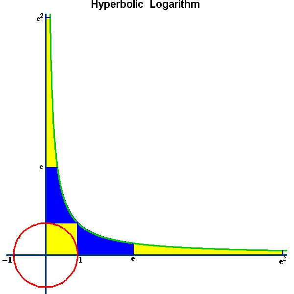
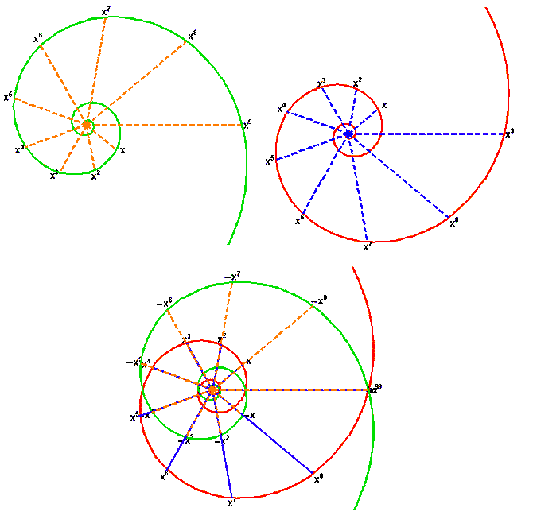
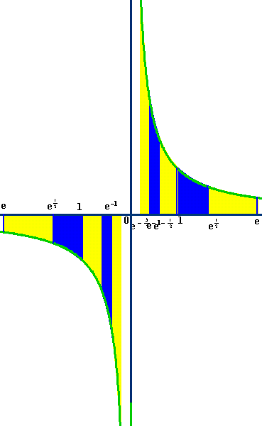
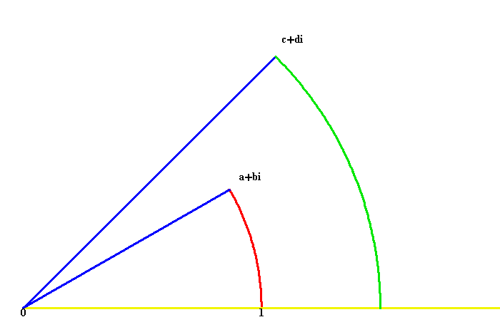
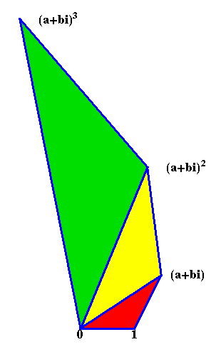
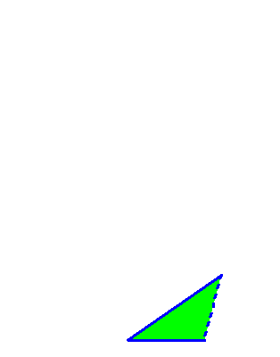
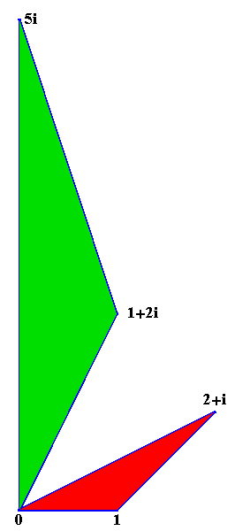
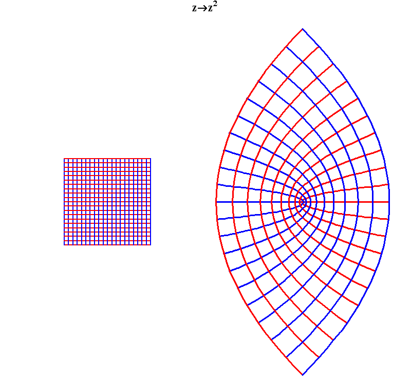
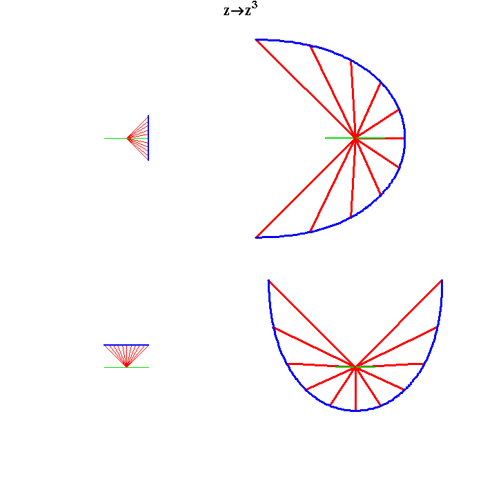

Figure 1

Riemann for Anti-Dummies Part 38
YOU ARE NOT IMPOSSIBLE
When Gauss set about writing his 1799 dissertation on what he called, "The Fundamental Theorem of Algebra," he had already in his mind a fully developed concept of the complex domain as the idea that penetrated most deeply into the metaphysics of space, and he would spend the rest of his life unfolding the implications of that youthful discovery. But, in order to achieve what he would later call, "full civil rights for complex numbers," he first had to root out the source of their oppression: the popular acceptance of Euler's diktat that such numbers were "impossible."
What one considers "impossible" is, fundamentally, a function of one's concept of what is "possible." Think of the foolishness today of those who insist that what Lyndon LaRouche says must be done, (most emphatically his electability as President of the United States) is "impossible." Their tragic mistake flows not from any reasoned, scientific assessment of the matter. They assert its impossibility because they don't want to face the possibility that their continued existence is possible only if what they think is "impossible" actually happens.
In one of his epistemological fragments, Bernhard Riemann spoke of the significance of the possible for science:
"Natural science is the attempt to understand nature by means of exact concepts.
"According to the concepts through which we comprehend nature our perceptions are supplemented and filled in, not simply at each moment, but also future perceptions are seen as necessary. Or, to the degree that the conceptual system is not fully sufficient, future perceptions are determined beforehand as probable; according to the concepts, what is "possible" is determined (thus what is `necessary' and conversely, impossible). And the degree of possibility (of `probability') of each individual event which is seen as possible, in light of these concepts, can be mathematically determined, if the concepts are precise enough.
"To the extent that what is necessary or probable, according to these concepts, takes place, then this confirms the concepts, and the trust that we place in these concepts rests on this confirmation through experience. But, if something takes place that is unexpected according to our existing assumptions, i.e. that is impossible or improbable according to them, then the task arises of completing them or, if necessary reworking the axioms, so that what is perceived ceases to be impossible or, improbable. The completion or improvement of the conceptual system forms the `explanation' of the unexpected perception. Our comprehension of nature gradually becomes more and more complete and correct through this process, simultaneously penetrating more and more behind the surface of appearances.
"The history of causal natural science, in so far as we can trace it back, shows that this is, in fact, the way our knowledge of nature advances. The conceptual systems that are now the basis for the natural sciences, arose through a gradual transformation of older conceptual systems, and the reasons that drove us to new modes of explanation can always be traced back to contradictions and improbabilities that emerged from the older modes of explanation."
By maintaining the "impossibility" of complex numbers, Euler, (whose patrons were the enemies of the American Revolution), along with J.L. Lagrange, (Napoleon's favorite mathematician), sought not merely to exclude such magnitudes from mathematical calculations. Both Euler and Lagrange made liberal use of these "impossible" magnitudes in formal calculations. Rather, Euler et al. sought to exclude the possibility that the human mind could penetrate beneath the surface of appearances into the deeper domain of, what Plato called "powers," where complex numbers arise.
In his 1799 dissertation Gauss attacked Euler's method directly:
"If imaginary quantities are to be retained in analysis at all (which seems for several reasons more advisable than to abolish them, once they are established in a solid manner), then they must necessarily be considered equally possible as real quantities; for which reason I would like to comprise the reals and the imaginaries under the common denomination of {possible quantities}: Against which I would call {impossible} a quantity that would have to fulfill conditions that could not even be fulfilled by allowing imaginaries."
The existence of complex numbers was not only possible: It was necessary to comprehend what ultimately made all numbers possible.
To establish this, Gauss tapped into the deep vein of investigations that goes all the way back to the Pythagoreans, who understood number as the means by which the mind expresses the harmonic principles that lie beneath the shadow of sense perception.
Writing in "On Learned Ignorance," Nicholas of Cusa described this concept of number this way:
"All those who investigate, judge the uncertain by comparing it to a supposed by a system of proportions.... But the proportion which expresses agreement in one aspect and difference in another, cannot be understood without number. That is why number embraces everything which is susceptible of proportions. Thus, it not only creates proportion in quantity, but in every respect through which, by substance or accident, (two things) might agree and disagree. Thus, Pythagoras rigorously concluded that everything is constituted and comprehended through the power of numbers."
Number has the power to express powers through proportions. Complex numbers express proportions among powers.
For example, the power to double a square is expressed through the geometric proportion 1, 2, 4, 8, 16, 32, etc., even though the magnitude that doubles the square is incommensurable to all these numbers. Furthermore, the power that doubles the cube is also expressed, but in a different way, by the same proportion, (as two geometric means between two extremes instead of one), even though the magnitude that doubles the cube is also incommensurable to all those numbers.
From this standpoint, all numbers can be generated by a succession of powers, and this is what is meant by the term, "logarithm"--a term coined by John Napier in 1594 from the Greek words "logos" and "arithmos."
The most general form of this concept is expressed by Jakob Bernoulli's equiangular spiral and Huygens' hyperbola. In the former, all possible magnitudes are expressed by the radii whose lengths are a function of an angle of rotation. Proportional lengths correspond to equal angles (see Figure 1).
Figure 1 |
In the latter, all possible magnitudes are expressed by lengths along the asymptote that correspond to equal areas (see Figure2).
Figure 2  |
In both cases all possible positive quantities are expressed, inversely, as a function of a power, expressed as either an angle (spiral) or an area (hyperbola).
In both cases, adding the logarithm (angle or area) produces proportional changes in length.
As discussed in the previous installment of this series, Leibniz brought a crucial contradiction to light by posing the question, "What has the power to produce a negative number?" This provoked a dispute with his collaborator Johann Bernoulli, who insisted that negative numbers were produced by the same powers as positive numbers. Leibniz, on the other hand, correctly disagreed. For Leibniz the very existence of negative numbers (which had been called "false" numbers) demanded a higher principle, which Gauss later discovered as the complex domain.
For Gauss, negative numbers were not absolute quantities. They were physically determined. In numerous locations, Gauss repeatedly polemicized, (against I. Kant) that the difference between positive and negative, right and left, up and down, could not be determined by mathematics but only with reference to physical action.
Look at this from the standpoint of the above illustrations of the spiral and hyperbola. Both generate all possible magnitudes as a function of powers. But, in both cases, the exact same result can be obtained, but in exactly the opposite orientation (see Figure 3 and Figure 4). In Figure 3, you can see two spirals that produce the same magnitudes, but in different directions.
Figure 3  |
In Figure 4 you can see two branches of an hyperbola that produce the same magnitudes, but in different directions.
Figure 4  |
In each case, if one set of magnitudes is denoted positive numbers the other set can be denoted negative. But, as Gauss pointed out, there is no {a priori} way to distinguish one from the other. Only when presented with both, is the existence of positive and negative established.
But, there is a still deeper, much more profound principle embedded in this. Look at the transition between the positive and negative hyperbola. The vertical asymptote is an "infinite" boundary separating positive from negative. Similarly, for the spirals. The transition from the positive to the negative spiral is the point of the change in direction, which each spiral approaches, but never crosses.
Thus, the domain in which both positive and negative numbers exist together must be of a higher power, where the powers that generate powers reside. It comprises Gauss' domain of all possible (complex) quantities.
Like all ideas, Gauss recognized that this domain could not be seen directly, but, it, nevertheless, was susceptible of metaphorical representation. Since it was the domain of powers, it could not be represented by simple proportions among things, but as a proportion between proportions. Consequently, each complex number represented a proportion, not a quantity. The manifold of complex numbers, Gauss said, could only be represented on a surface extended in two directions. The physical example Gauss used was the geodesist's plane leveller. The position of the bubble at rest is determined by both the axis of the tube and the direction of the pull of gravity, which is perpendicular to it.
On Gauss' surface each point represented a power that was denoted by a complex number. Using some physically determined point and line as a reference, each power, i.e., each complex number is generated by a spiral action rotation and extension (see Figure 5).
Figure 5  |
In this way, proportions between proportions could be represented.
For example, a power acting on a power. In Figure 6 and Animation 1, complex number a+bi represents a power produced by a combination of rotation and extension. When that power acts on itself, it produces (a+bi)2. When it acts on itself again it produces (a+bi)3, etc. What results is a series of similar triangles conforming to an equiangular spiral. While this spiral looks similar to Bernoulli's spiral, it is different. Bernoulli's spiral represents a succession of powers that produce simple magnitudes. Gauss' complex spiral represents a higher power that produces a succession of powers, not simple magnitudes.
Figure 6  |
Animation 1  |
Figure 7, illustrates the more general case of the proportion between two different powers, or, what is commonly known as multiplication. Here the complex number 2 + i is multiplied by 1 + 2i to form 5i. In this case the 2 + i forms the red triangle with vertices 0, 1, 2 + i. The product is the point (5i) which forms the similar triangle with 0, 1 + 2i as its base. (The schoolbook arithmetic idea of multiplication as a set of rules is brainwashing. As Gauss emphasized, multiplication is a proportion such that 1: a :: b: a x b. You, the reader, are left to confirm this for yourself experimentally. Try experimenting with Theatetus' squares and rectangles.)
Figure 7  |
As in the previous examples of the hyperbola and spiral, the proportional changes in extension are "connected" by adding the angles (logarithm) and multiplying the lengths.
Gauss' idea opened up a whole new capacity for investigating the way powers act on powers. For example, Figure 8a illustrates, that when a square is "squared" in the complex domain, orthogonal parabolas are produced.
Figure 8a  |
When a system of squares is squared, a system of orthogonal parabolas is produced (Figure 8b.)
Figure 8b  |
Figure 9a and Figure 9b, illustrate the same principle for "cubing" a square.
Figure 9a  |
Figure 9b  |
These ideas will be explored more fully in future installments, but for now, have a little more fun by thinking, in this light, of Beethoven's late string quartets. Think of the opening intervals of, for example, Op. 132. Think of each of these half-step pairs as complex numbers, representing the principle of change between neighboring keys and modes within the well-tempered system of polyphony, (for example, the F#-G as the Lydian boundary between C and G). Thus, the opening intervals are not between individual notes, but between "powers," as represented by the half-step pairs (complex numbers.) Hear the opening eight measures this way, leading to the opening 'cello theme, which could not exist as an idea, except in this higher complex domain that Beethoven is creating in these late string quartets.
{kind=link}
{kind=link}
{kind=link}
{kind=link}
{kind=link}
{kind=link}
{kind=link}
{kind=link}
{kind=link}